House Wire — defects
The running list, numbered once and never renumbered: "fix 3" always means the same thing. World axes X east, Y up, Z south; metres. The house is x 0–10, z 0–6, the driveway off its east face. Back to the model.
Objects and groups
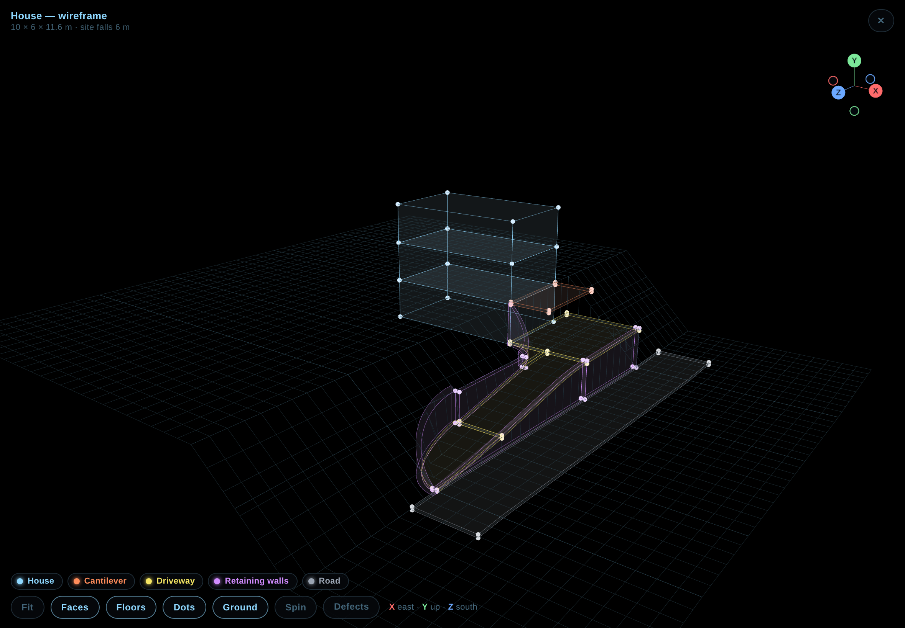
Rules agreed so far
- R1 — Levels are finished surfaces. A number in a terrain profile is the surface you walk or drive on. A slab's top is that number; its underside is 20 cm below.
- R2 — Walls sit on the cut face, flush. A wall beside a cut stands in the 30 cm the cut is widened by, on the hill side of the line, and every wall along one edge is one continuous line.
- R3 — Nothing overlaps. A wall stops at a slab's underside; a slab stops at a wall's face. Two objects share a face, never a volume.
- R4 — Tangent joins. Where an arc meets a straight, the arc's end is tangent to the straight.
- R5 — One sampling. Anything that follows the ramp — slabs, walls, the ground grid — is sampled at the same stations.
Defects
Wrong: the straight uphill wall (x 12.7–13) stands inside the cut, while the fillet wall and the mouth wall are bands in the hill (arc → arc − 0.3). At both ends the wall line steps 30 cm.
Fix: R2 — put all three on the hill side of the cut line: uphill wall x 12.4–12.7, or widen the cut so the wall stands at 12.7–13 and the ramp is 3 m wide from x 13.
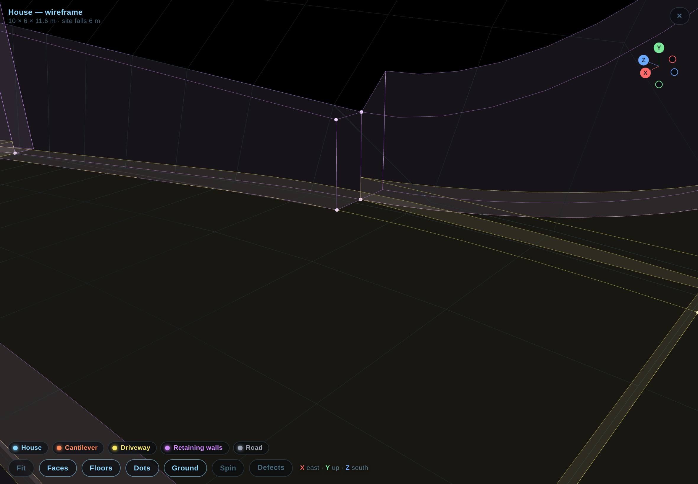
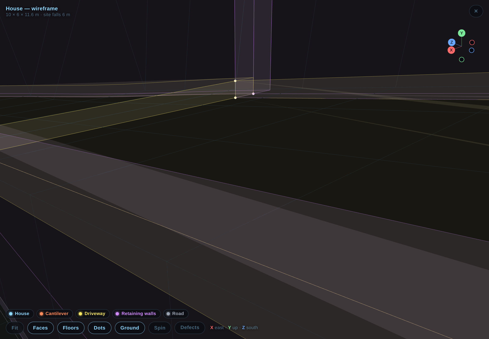
Wrong: radius 2.7 equals the distance from the house face to the ramp's uphill edge (12.7), so the arc is tangent at both ends today — but the wall band (r − 0.3) starts at the house corner with its inner edge on the house's east face line. Once 1 is fixed and the ramp edge moves to 13, the radius has to become 3 to stay tangent, and the straight wall then starts at z 9.
Fix: derive the radius from the ramp's offset (r = dFrom + wall thickness) instead of typing both by hand.
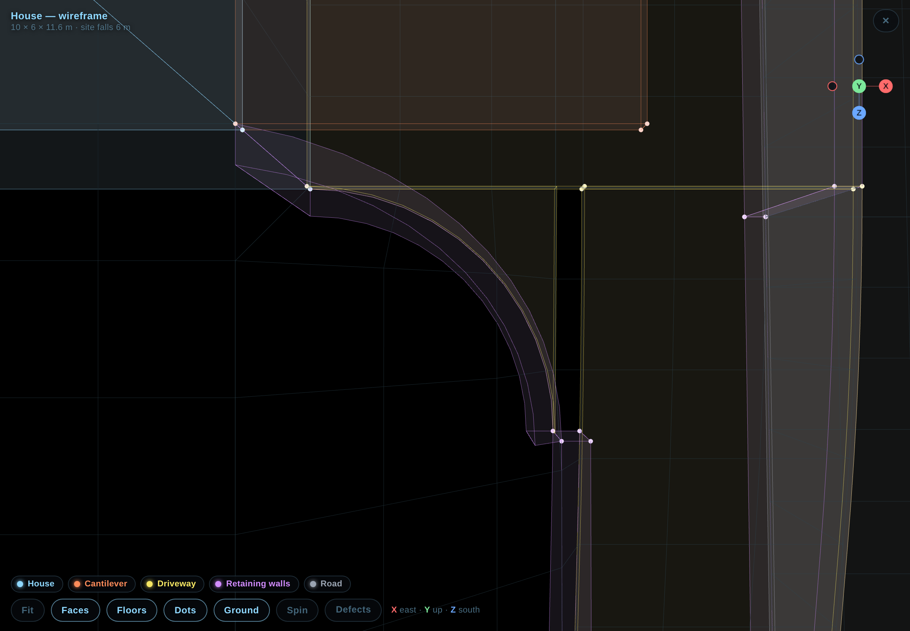
Was wrong: the ramp eased down from z 5, but the door strip beside it (x 10–13) stayed flat, so for that metre there was a 7 cm step between the two slabs.
Fixed (D1): the ramp starts at z 6, the house edge; the apron is one flat slab z −2 to 6 and the door strip is gone.
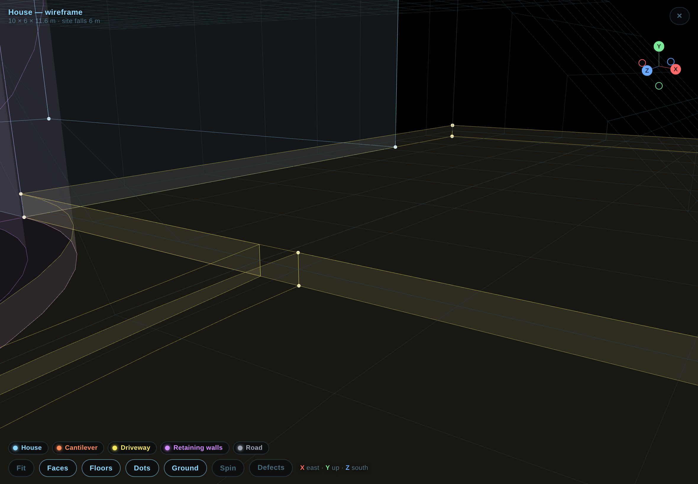
Wrong: the retaining wall and its taper run from y −6 up to the slab's top, so the wall occupies the slab's volume; at the ramp foot the wall's top ends below its own foot and the stub inverts.
Fix: R3 — wall top = slab underside; at the foot the wall runs out where the slab's underside meets −6.
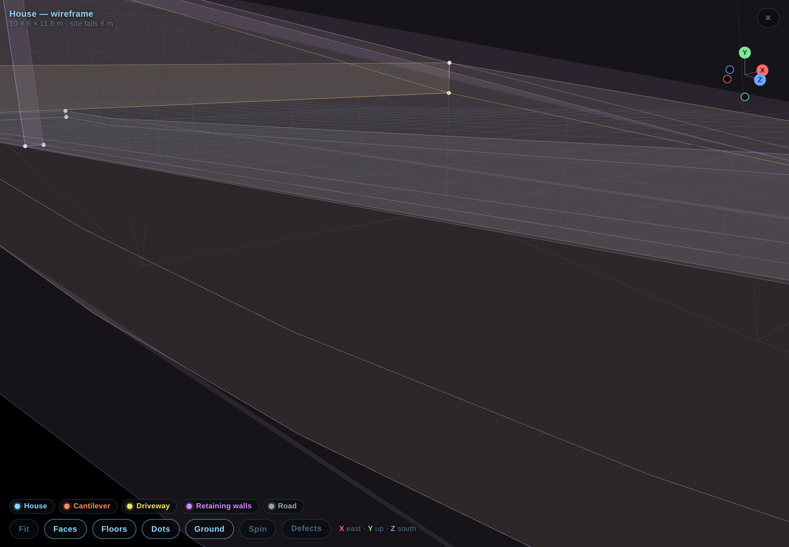
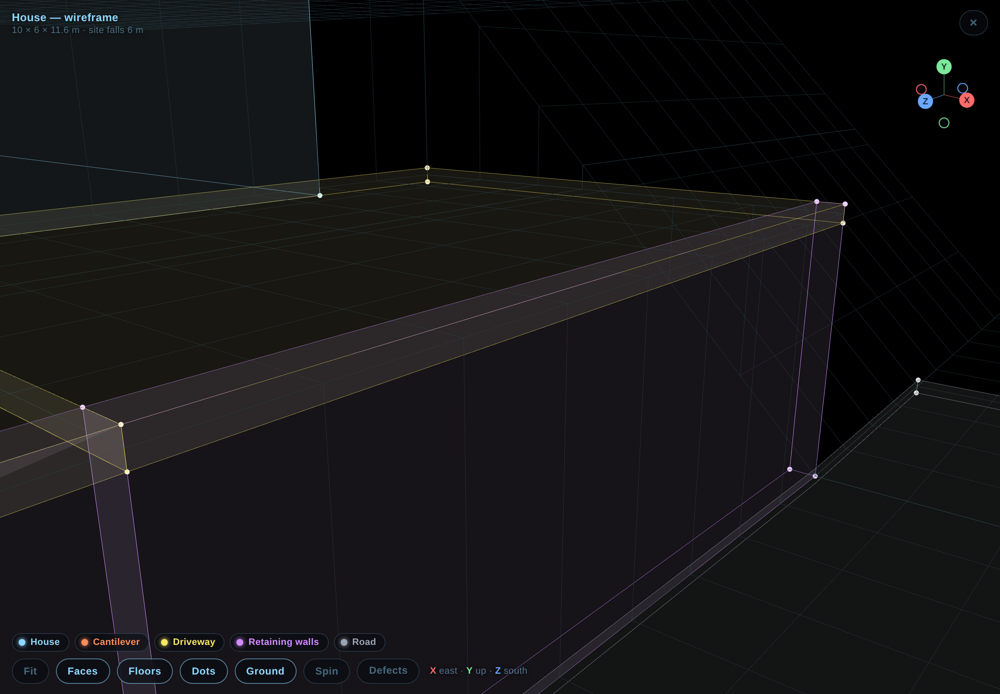
Wrong: the cut profile says −3 (apron), the apron slab's top is −2.9, the road slab is −6.1 to −5.9 on ground at −6. The wall tops at −2.9 sit 10 cm above the profile they are meant to hold.
Fix: R1 — the profile becomes −2.9 / −6 (finished surfaces), the road slab −6.2 to −6, wall tops at the slab underside.
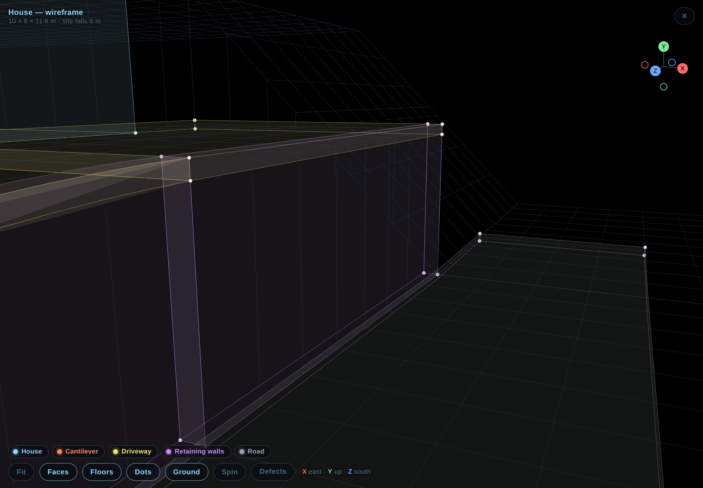
Wrong: the band's top is evaluated per vertex, so the inner and outer arcs get different natural-ground heights and the top tilts across its 30 cm.
Fix: read the natural ground once, at the outer (hill-side) face, and use it for both edges.
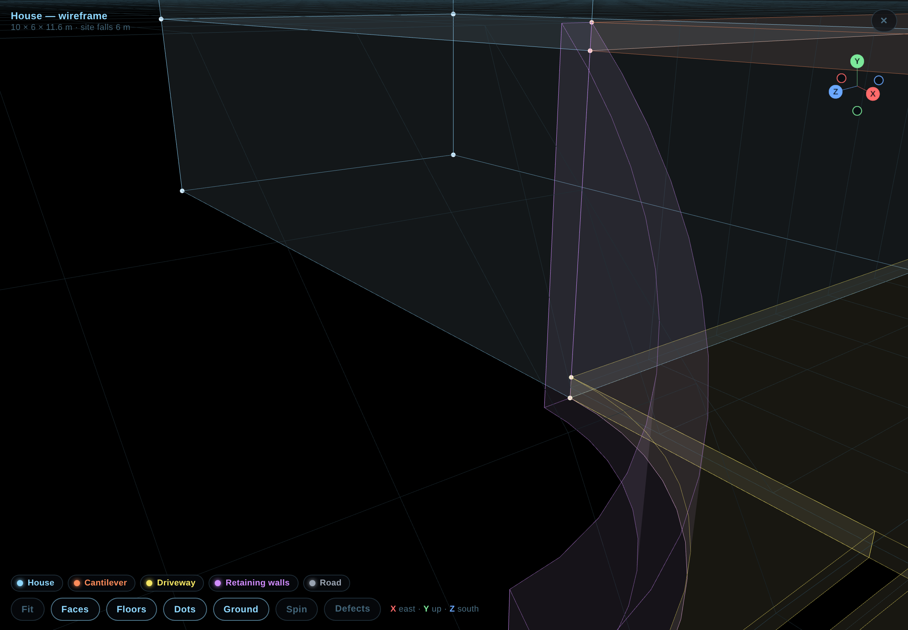
Wrong: the ground grid is sampled every 1 m, the ramp slabs and walls every 0.5 m, so along the eased curve the grid's lines and the slab's edges do not coincide.
Fix: R5 — sample the grid across the ramp at the slab's stations, or both at one shared list of breakpoints.
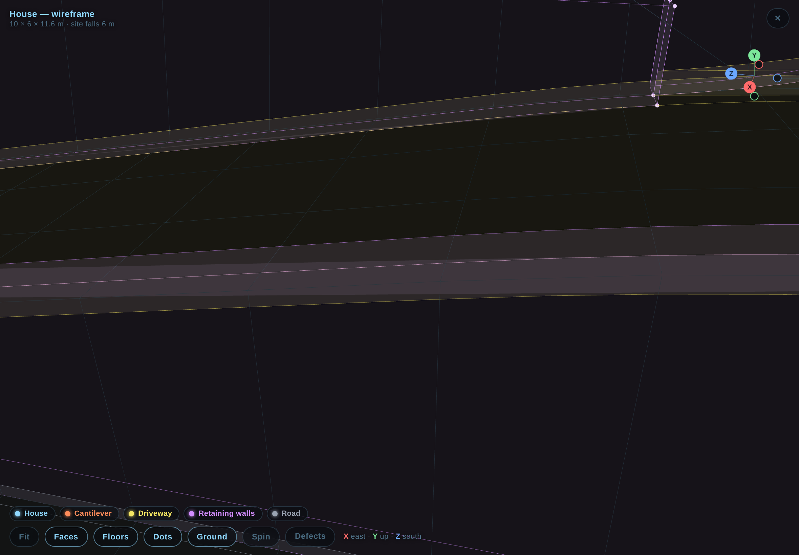
Was wrong: 3 m over 11 m was 27 % average and about 36 % through the eased middle — too steep for a car in the wet.
Fixed (D2): the grade starts at the entrance itself, not at the end of a flat pad: the ramp runs z 6 to 22 (16 m) and the mouth's floor is on it. The road is 2 m below the garage at the entrance, so the drop is 2 m — 12.5 % average, about 17 % in the middle.
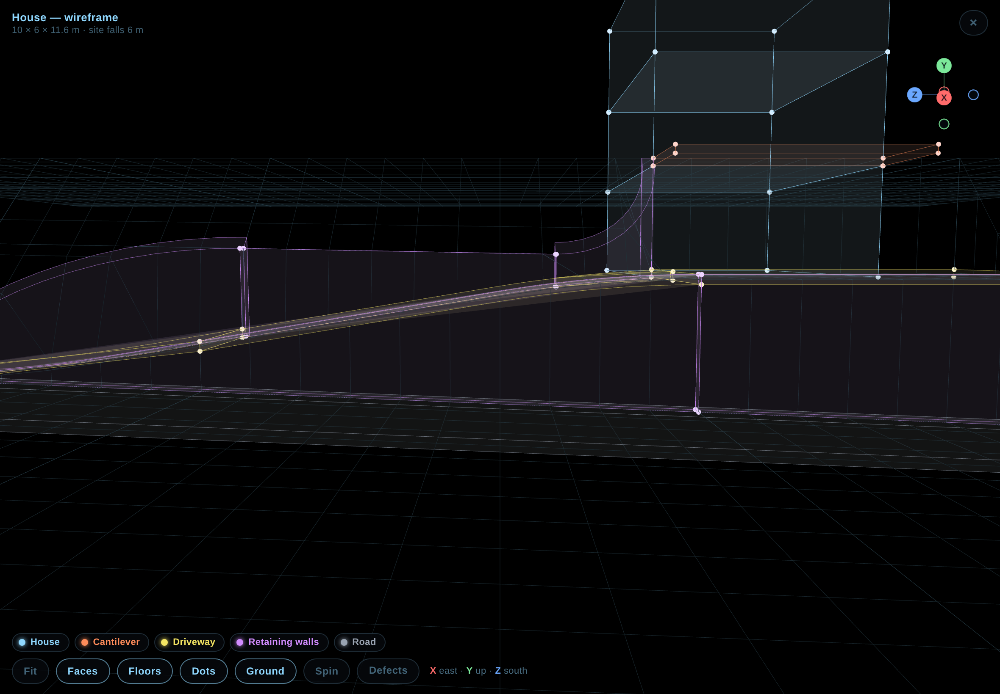
Decisions
- D1 — decided: the ramp starts at the house edge (z 6); the apron stays flat and whole.
- D2 — decided: the driveway climbs from the very entrance; no flat pad. The mouth is the ramp's last 6 m and its floor is on the grade.
- Site fact: the road is not level — it rises 1 m along the property, so the entrance (south end, z 22) is 2 m below the garage floor, not 3. Assumed: the north end of the property (z −2) is the 3 m-below end.